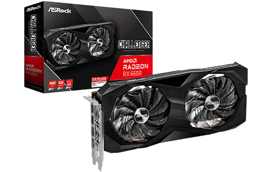

Então qual voce vai escolher ? Sim ou Não ?
Como isso vai funcionar ? vão ter várias opções de coisas que eu gostaria de receber de natal todas elas sendo placas de video vai ter todas as informações dela abaixo e conforme vai recusando os presentes Clicando em sim ou não abaixo o Nível de preço vai reduzindo até chegar no mínimo possível qualquer erro que o site tiver me fale para eu poder melhorar e resolver o problema
- Nome do Produto: RX6600
- Preço: R$1250
- Loja: Pichau/terabyteshop
- Descrição: Essa aqui é a terceira placa de video ela tem um pouco a mais de potência que a anterior mas com um preço um pouco menor ele tem as mesmas tecnologias que as anteriores mas não tem um ENCODER bom que nem as anteriores então pra gravar vídeos e fazer lives a qualidade vai ser menor mas ela é boa o suficiente para rodar todos os jogos atuais como as anteriores.
- Nível de Valor: Médio